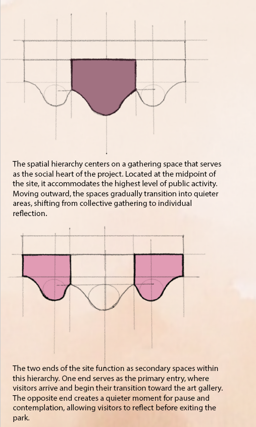
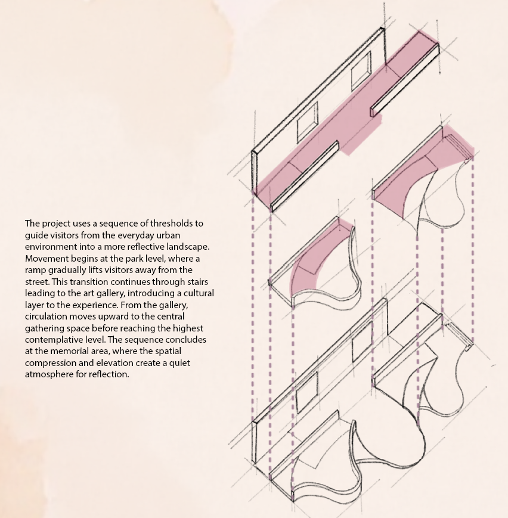

Public Plaza Exploration
Helixa
Park
A plaza that moves with its visitors. Inspired by the organic courtyards of Tokyo, Helixa Park uses curving pathways and layered spaces to create movement and encourage discovery within the urban fabric.
The flowing layout promotes balance, inviting people to explore, linger, and engage with both the environment and each other. Subtle shifts in elevation and spatial hierarchy provide moments of pause throughout the park.
The plaza unfolds across three experiential levels—highlighting art, gathering, and contemplation—while placing accessibility at the center of the design to ensure an inclusive urban experience.

Context & Aerial Perspective
01 / Formulation


02 / Spatial Organization


03 / Atmosphere & Details